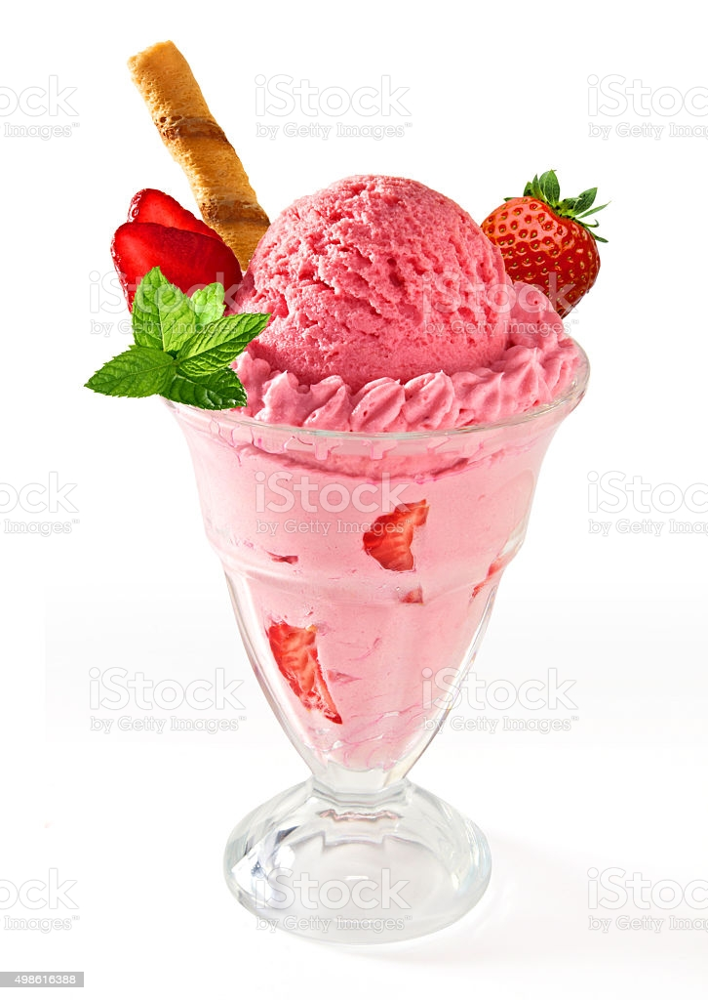
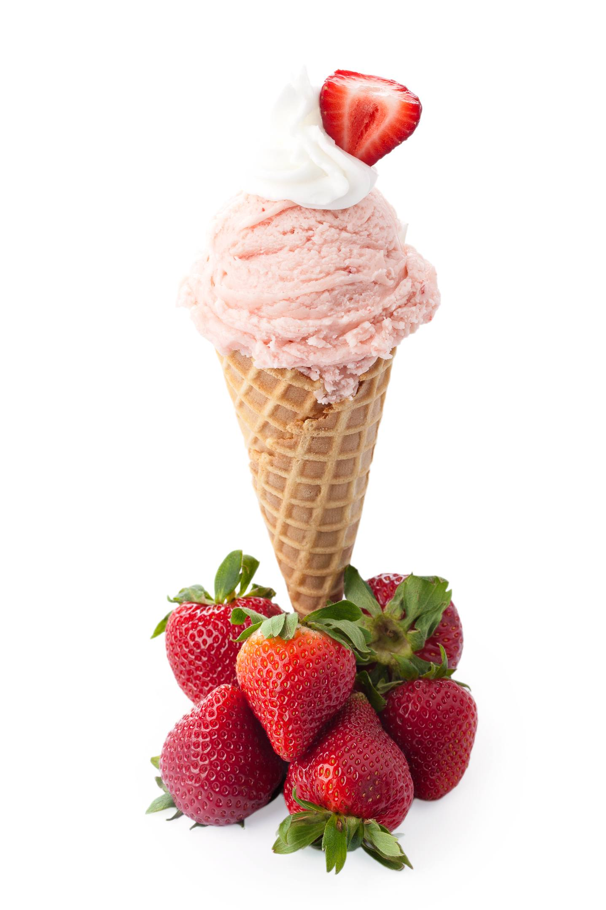

Home
Home

O morango, uma das frutas preferidas da população, teve sua origem na Europa, mas hoje é cultivado em várias outras partes do mundo. É um alimento delicado, saboroso e versátil, o que permite sua utilização como entrada, prato principal, bebida ou sobremesa. Encontramos o morango em sucos, sorvetes, recheios, coberturas, geleias, compotas, tortas, mousse, flans, gelatina, caldas, entre outros.
A parte que consumimos do morango é conhecida como pseudofruto, pois assim como a maçã, o caju e a pera, a parte carnosa e suculenta não é originada do ovário da flor.
Morango é um pseudofrutoQuando falamos em fruto, nos referimos ao ovário da planta fecundado e desenvolvido. Já o pseudofruto é um órgão da planta que não é originado do ovário, mas sim de outro órgão da planta.
O verdadeiro fruto do morangueiro é aquele pontinho amarelo que chamamos de “sementinha”. No caso do morango, o pseudofruto é também chamado de infrutescência. Por isso quando consumimos um morango, estamos consumindo inúmeros frutos ao mesmo tempo.
Fonte:Morango
Produto |
Valor |
Quantidade |
| R$15,00 | ||
|  | R$25,00 | |
|  | R$5,00 | |
| R$3,00 | ||